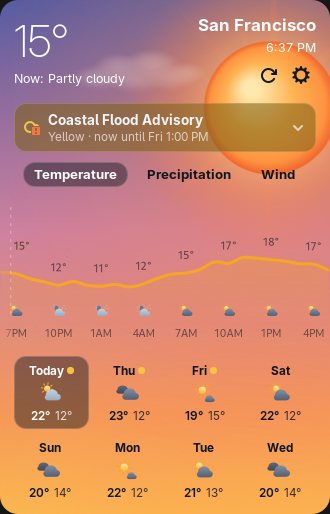
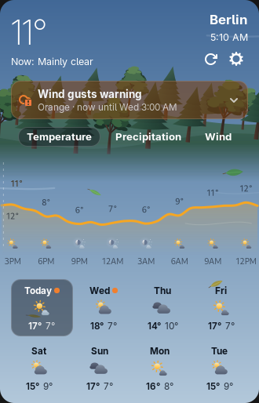
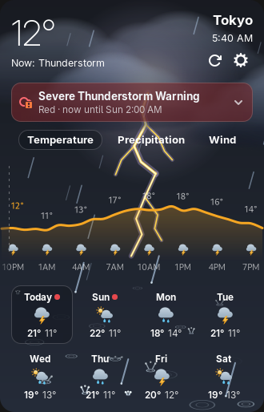
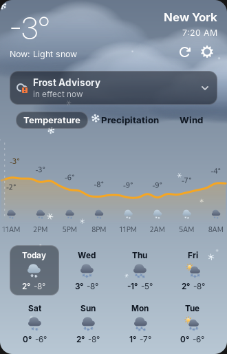
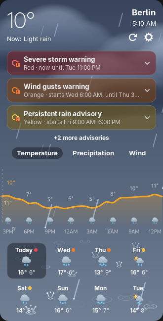

Timing model — advisories are not per forecast day
Every source (NWS, MET Norway, MeteoAlarm, CAP feeds) returns alerts that are active or upcoming right now, each with its own validity window (starts → ends). There is no “alerts for Thursday” query: an alert for day 5 usually has not been issued yet. A day view is therefore an overlap filter over the alerts we already hold. Typical horizon is 0–48 h; multi-day events (heat, coastal flooding) can span 3+ days.
A · Extension banners (recommended). One row per active alert, directly under the
header, sorted by level then start. All advisories start collapsed by default. Day tiles carry a dot in the level
colour when an alert overlaps that day; selecting a day lists only its overlapping alerts (try Wed — the whole
block disappears). Height cost: ~46 px per collapsed alert. No advisories means nothing renders at all:
no heading, no empty-state box. Rows follow AdwExpanderRow anatomy: prefix
weather-severe-alert-symbolic (its warning badge takes the level colour), title + subtitle, pan-down-symbolic
/ pan-up-symbolic suffix arrow — no bespoke triangle or disc.
B · Extension chip. A single line under the condition text keeps the card short. Cheapest on height, weakest on urgency: a red warning looks like a yellow advisory until opened. Kept as the low-profile alternative; the expanded state reuses A's rows verbatim.
C · App window. Same rows, more room: full description and instruction inline for the top alert, city rows in the sidebar gain a level dot, and the 8-day tiles mark overlapped days. Pick a day — the advisory block retitles to that day and shows only alerts overlapping it. A day with none shows nothing.
D · Panel + states. What the top bar shows when the menu is closed, the common interface every provider maps into, and the awkward states: several alerts at once, alert text in the issuer's language, and the no-advisories rule: display nothing.
E · Shell goldens. The five pixel-locked headless GNOME Shell captures
(extension/tools/golden/shell/advisory-*.png) covering Yellow (level 1), Orange (level 2), Red (level 3),
Neutral (unknown severity, open-ended), and Stacked (3 rows + +2 more advisories overflow) — all
collapsed by default on initial view. See also advisory-goldens.html
for the side-by-side interactive HTML + golden comparison.
Left to right: no alerts (unchanged), orange active, red active. Badge colour = highest active level only; a warning that merely starts tomorrow does not badge the panel. Badge clears when the alert ends or is cancelled. No blinking, no sound. The panel badge stays (the top bar has no background to tint), and the panel button's accessible name states the level in words — in the card the subtitle line does that job (“Orange · now until…”), so no pill badge is needed there. Colour is never the only channel anywhere.
// normalized forecast gains ONE new field, next to current/daily/hourly:
alerts: [ {
id, // source id; dedupes updates of the same alert
event, // "Wind gusts warning" — issuer's words, not translated by us
headline, // optional one-liner; falls back to event
level, // 1 yellow · 2 orange · 3 red · null = no colour (see note below)
severityLabel, // issuer's own word: "Moderate", "Severe", "Warning"…
certainty, urgency, // CAP words or null: "Likely", "Immediate"
startsAt, endsAt, // validity window (city-local ISO, like hourly times)
issuedAt,
description, // full text, issuer's language
instruction, // "what to do", or null
areas, // ["Berlin and surroundings"] — display text
sender, source, // "DWD", "MeteoAlarm" — shown in the meta line
language, // "en", "de"… so the UI can label untranslated text
} ]
// plus, per location: alertsCoverage: 'ok' | 'none' | 'failed'
// 'none' = no source covers this place · 'failed' = fetch error, keep last good set
| Common | CAP severity | MeteoAlarm / MET | NWS |
|---|---|---|---|
| 1 · Yellow | Minor | yellow | Minor |
| 2 · Orange | Moderate | orange | Moderate |
| 3 · Red | Severe / Extreme | red | Severe / Extreme |
| null · no colour | Unknown | — | Unknown |
Colour is not universal. MeteoAlarm, MET Norway and Canada issue a native colour (MET even sends riskMatrixColor); use it verbatim when present — it already folds impact × likelihood into one risk colour. CAP and NWS transport only a severity word; the mapping above is then our display convention, not the issuer's colour. CAP also allows Unknown: level stays null, the row renders neutral with no level word, and sorts after every coloured alert. Never guess a colour from the event name alone.
Time mapping needs care: NWS sends both ends (event over) and expires (message stale) — “until” must use ends, falling back to expires. CAP's onset/expires pair maps directly. Day overlap for tiles is computed from [startsAt, endsAt] against each daily date; sorting is level desc, then startsAt.
Component mapping, per GNOME: the app builds each row as a real AdwExpanderRow (title = event, subtitle = “Orange · until…”, prefix weather-severe-alert-symbolic) — the same widget already used for “Add by coordinates”. The extension cannot use libadwaita widgets inside gnome-shell, so it imitates that anatomy with St: a focusable St.Button header, St.Icon prefix, pan-down-symbolic suffix rotating 180°, accessible name carrying the level word. AdwBanner was rejected for the list: HIG banners are a single short title plus one optional button for a persistent view-level state — they cannot hold several alerts with long official text. dialog-warning-symbolic was rejected as the icon: it already means “the app hit an error” (our stale-data banner), and weather-severe-alert says “hazard outside”, not “software problem”.
Issuer text is never machine-translated by the app. Where a feed offers several languages we request the user's locale first, then English; the meta line always names the language actually shown.
One rule for every flavour of “none”: a covered place with nothing active, a selected day no alert overlaps, and a place no source covers all render exactly nothing — no heading, no empty-state box, no “all clear”, no “not available” line, no panel badge, no sidebar dot. The card is byte-for-byte today's card. The distinction survives only inside alertsCoverage, for a future prefs/debug surface — never in the weather UI.
Show the top 3 by level, then “+2 more advisories” expanding the rest. The card must not grow unboundedly during a storm outbreak.
Keep showing the last good set until each alert's own end time, with the stale-data note the forecast already uses. A network blip must not clear a live warning.
advisory-yellow.png · San Francisco sunset
advisory-orange.png · Berlin wind day
advisory-red.png · Tokyo storm night
advisory-neutral.png · New York snow day
advisory-stack.png · Berlin rain day